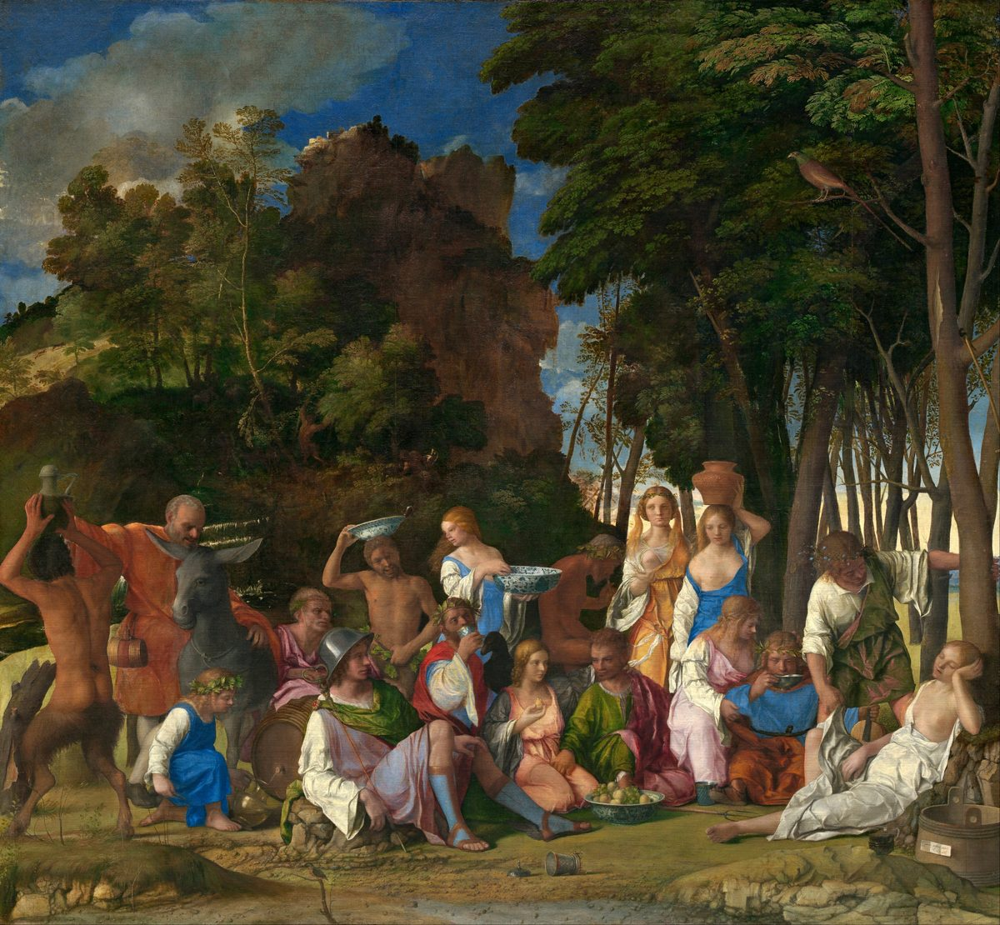

1 Corinthians 8 — The Mister Translation

Paul’s warning is about a man who sees a believer “reclining at a meal in an idol’s temple” (8:10). This is a feast of the gods themselves, in a grove, after Ovid’s account of the gods’ banquet. It is not a temple and the Corinthians are not in it, but it shows how a Renaissance painter pictured a meal in the presence of gods.

“Concerning food sacrificed to idols.” Peri de tōn eidōlothytōn, now concerning the things sacrificed to idols, opens a new question in the letter. The Corinthians had asked about it, and the question concerns meat sold in the market after it had been offered in a temple (eidōlothyton). The phrase oidamen hoti pantes gnōsin echomen, we know that we all have knowledge, is the Corinthians’ own claim, which Paul accepts and then limits. The shelf: the NWT 1984 “we know we all have knowledge,” the KJV “we all have knowledge.”
“Knowledge puffs up, but love builds up.” Hē gnōsis physioi, hē de agapē oikodomei, knowledge puffs up, but love builds. The verb physioō is the one of 4:6, 4:18 and 5:2, where the congregation is puffed up. The verb oikodomeō, to build up, is the building verb of 3:10, where Paul lays a foundation and another builds on it (oikodomeō). The shelf: the NWT 1984 and 2013 “Knowledge puffs up, but love builds up,” the ASV “Knowledge puffeth up, but love edifieth,” the KJV “Knowledge puffeth up, but charity edifieth.” The translation keeps “builds up” for oikodomei, the building word of chapter 3.
“Does not yet know as he ought to know.” Ei tis dokei egnōkenai ti, oupō egnō kathōs dei gnōnai, if anyone thinks he has come to know something, he has not yet known as he ought to know. The perfect infinitive and the aorist are a contrast: the one who thinks he knows has not yet come to the knowing that is due. The shelf: the NWT 1984 “he does not yet know [it] just as he ought to know [it],” the KJV “he knoweth nothing yet as he ought to know.”
“Known by him.” Ei de tis agapa ton theon, houtos egnōstai hypʼ autou, but if anyone loves God, this one is known by him. The verse turns the question from having knowledge to being known. The verb is perfect passive, and the subject of the knowing is God. The NWT 1984 “this one is known by him,” and the ASV “the same is known by him.”
“An idol is nothing in the world.” Oudēn eidolon en kosmō, an idol is nothing in the world. The statement is probably the Corinthians’ own knowledge, which Paul agrees with. The noun eidōlon is an image or idol (eidōlon). The shelf: the NWT 1984 “an idol is nothing in the world, and that there is no God but one,” and the ASV “no idol is anything in the world, and that there is no God but one,” and the KJV “an idol is nothing in the world, and that there is none other God but one.”
“So-called gods, and many lords.” Eisin legomenoi theoi, there are those called gods, the word legomenoi, so-called, marks the title as a name the world uses. The verse sets the many gods and many lords against the one. The shelf: the KJV “though there be that are called gods,” the NWT 1984 “there are those who are called ‘gods,’”; the NWT 2013 has “so-called gods.”
“One God, the Father; one Lord, Jesus Christ.” Hēmin heis theos ho patēr, ex hou ta panta kai hēmeis eis auton, kai heis kyrios Iēsous Christos, to us there is one God, the Father, from whom all things are and we for him, and one Lord, Jesus Christ, through whom all things are. The creed has two halves, God and Lord, each with its preposition: ex hou, from whom, for the Father, and di hou, through whom, for Jesus. Commentators often hear an echo of the Shema of Deuteronomy 6:4, already on these pages. The sentence keeps “Lord” for Jesus, because the referent is Jesus in the second clause, and “God” for the Father. The shelf: the ASV “yet to us there is one God, the Father, of whom are all things, and we unto him; and one Lord Jesus Christ, through whom are all things,” and the NWT 1984 “there is actually to us one God the Father, out of whom all things are, and we for him; and there is one Lord, Jesus Christ, through whom all things are.”
“Not everyone has this knowledge.” All’ ouk en pasin hē gnōsis, but not in all is the knowledge. The knowledge Paul has been describing is not held by everyone. The Greek word for conscience is syneidēsis (syneidēsis), and the weak conscience is the one that is defiled when it eats. The shelf: the KJV “Howbeit there is not in every man that knowledge,” the NWT 1984 “there is not this knowledge in all persons.”
“Accustomed until now to the idol.” Tē synētheia heōs arti tou eidōlou, by the habit of until now the idol, is the reason some eat as something sacrificed to an idol. The habit is a past one, and it stays. The word asthenēs, weak, marks the conscience (asthenēs). The shelf: the NWT 2013 “because of their former association with the idol,” and the TNM 2019 “debido a que antes adoraban ídolos”.
“Food does not commend us to God.” Brōma de hēmas ou parastēsei tō theō, food will not bring us near to God. The sentence is a principle, and it is the reason for the restraint that follows: food does not change our standing, so the eating is free, and the brother is not. The shelf: the KJV “But meat commendeth us not to God,” the NWT 1984 “food will not commend us to God.”
“This right of yours.” Hē exousia hymōn hautē, this right of yours, is the word for power, authority, or liberty (exousia), the same word of 7:37, where the man has authority over his own will. Paul does not deny the right; he warns that it can become a stumbling block. The shelf: the NWT 1984 “this authority of YOURS does not somehow become a stumbling block,” the NWT 2013 “your right to choose,” the KJV “this liberty of yours become a stumblingblock.”
“Reclining at a meal in an idol’s temple.” En eidōleiō katakeimenon, reclining in an idol temple, is the picture of a dinner held in the precinct of a god. The verb katakeimai is the verb of reclining at table. The sentence asks whether the weak one will be built up to eat, the same verb oikodomeō of verse 1, now used for the conscience of the weak. The shelf: the NWT 1984 “reclining at a meal in an idol temple,” the ASV “sitting at meat in an idol’s temple,” the KJV “sit at meat in the idol’s temple.”
“The brother for whose sake Christ died.” Ho adelphos di’ hon Christos apethanen, the brother for whose sake Christ died. The weak brother is destroyed, apollytai, by the knowledge of the strong. The sentence makes the brother’s worth Christ’s death, which is the argument. The shelf: the NWT 1984 “[your] brother for whose sake Christ died,” the ASV “the brother for whose sake Christ died.”
“I will never eat meat again.” Ou mē phagō kreas eis ton aiōna, I will by no means eat meat for the age. The vow is absolute in form: Paul will not eat meat again, so that his brother is not made to stumble. The verb skandalizō, to make to stumble, is the root of the word skandalon (skandalon). The shelf: the NWT 1984 “I will never again eat flesh at all,” the KJV “I will eat no flesh while the world standeth.”
Patterns worth carrying forward
Where this translation keeps the exact words: “puffs up” for physioō, as in 4:6, 4:18, 5:2; “builds up” for oikodomei, the verb of 3:10; “stumbling block” for proskomma, and “weak” for asthenēs; “right” for exousia, the word of 7:37; “Lord” for Jesus in 8:6, and “God” for the Father.
Echoes paid. The puffed up of 4:6, 4:18–19 and 5:2, now the knowledge that puffs up (8:1); the building of 3:9–10, now the love that builds (8:1) and the conscience that is built (8:10); the not even eat with of 5:11, now a meal in an idol’s temple (8:10); the right of 7:37, now a right that can stumble (8:9); and the knowledge of 1:5, now a knowledge that must be known by God (8:3).
Echoes planted. The right of 8:9 returns in chapter 9, where Paul claims his right to support and gives it up. Meat sacrificed to idols returns in chapter 10, where the meal at the idol’s table is treated as a question of fellowship. Christ died for the brother (8:11) prepares the account of the gospel in chapter 15.
Next in this book: 1 Corinthians 9, not yet on these pages. Paul turns from the weak brother to his own rights: he asks whether he is not free and whether he is not an apostle.